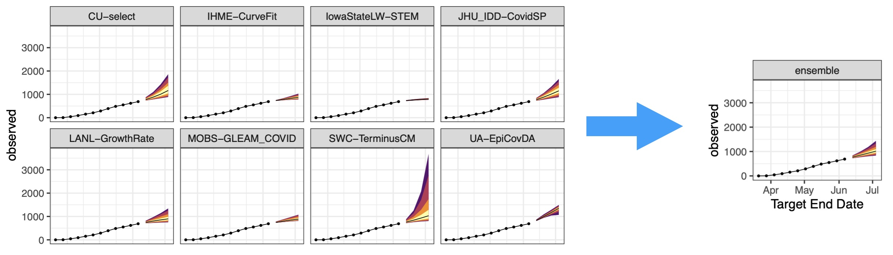
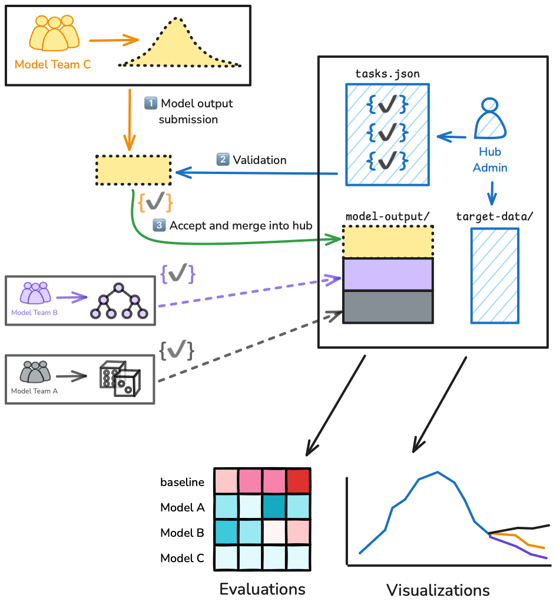
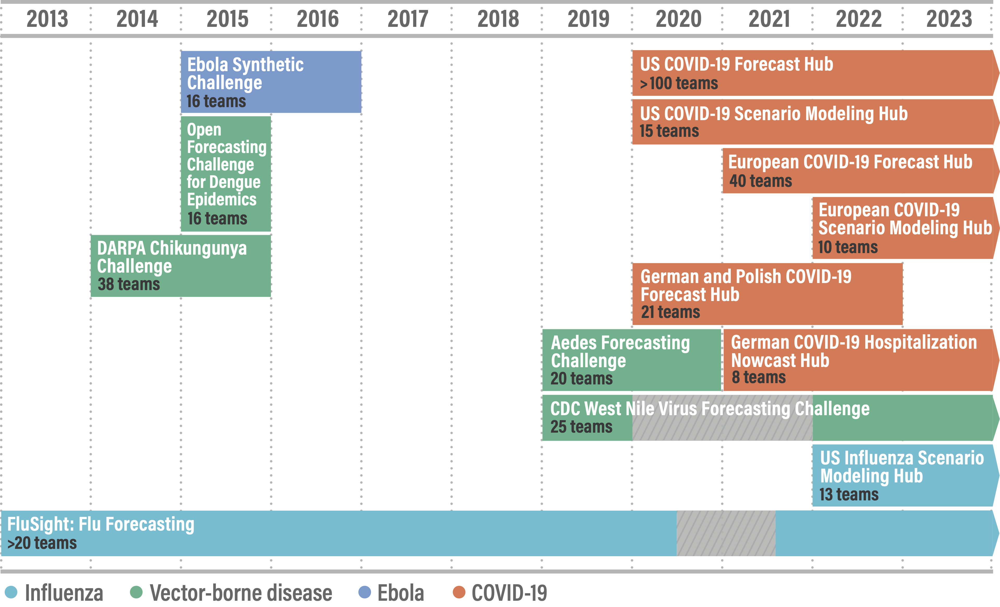
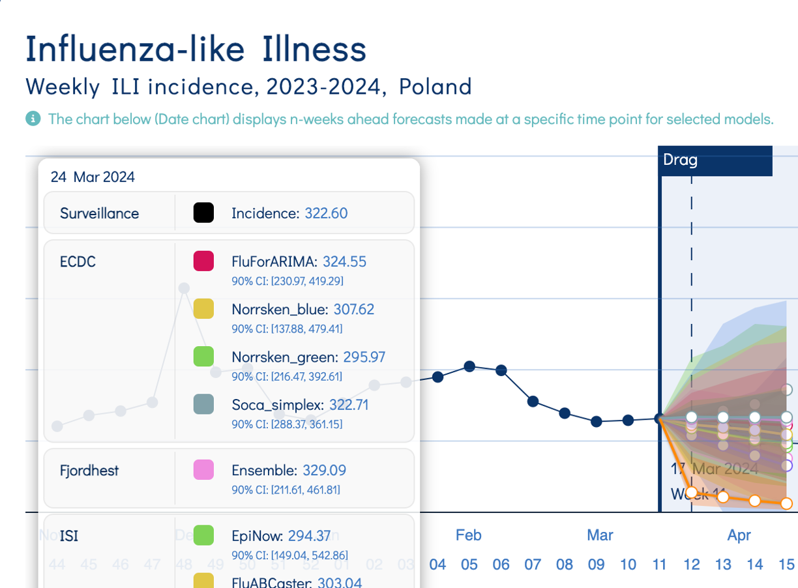
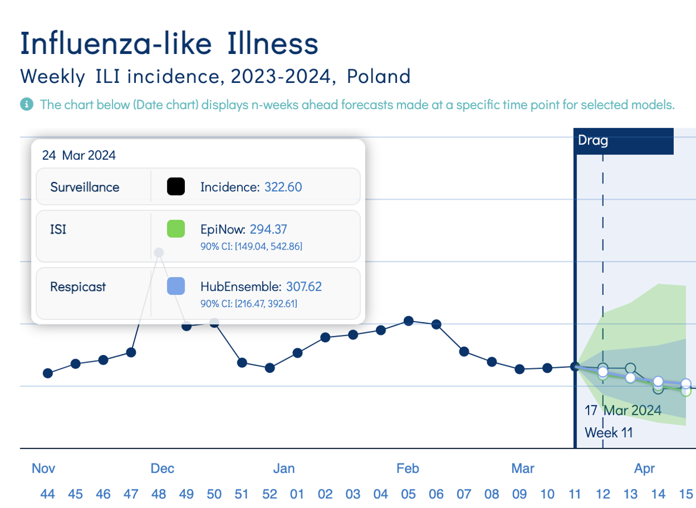

Multi-model ensembles
Nowcasting and forecasting of infectious disease dynamics
Ensembles: many forecasts into one
Figure credit: Evan Ray and Nick Reich
Why ensemble?
- Models are specialists and you want all the perspectives
- different data sources
- different philosophies, e.g. more mechanistic or more statistical approaches
- different methodologies and parameterizations
- A single “consensus forecast” is easier for decision-makers to digest
“Whole is greater than sum of parts”
Average of multiple predictions is often (not always) more performant than any individual model
Strong evidence in weather & economic forecasting
Recent evidence in infectious disease forecasting
- Ebola(Funk et al. 2019)
- dengue(colon-gonzalez_probabilistic_2021?)
- flu(reich_accuracy_2019?)
- COVID-19(cramer_evaluation_2022?)
Ensemble methods: how to average?

Figure credit: Howerton et al. (2023)
Ensemble methods: to weight or not?
Weight models by past forecast performance
- e.g. using forecast scores
Rarely better than equal average
- lots of uncertainty in weight estimation!
- put a “strong prior” on equal weights, both in your mental and statistical models
Collaborative modelling “hubs”
Projects run by research groups, public health agencies
Participation generally open
Standard format enables
- data validation
- ensemble-building
- model evaluation
- visualization

Hubs increasingly used in infectious disease modelling
Reich et al. (2022)
… e.g., the European Respicast Hub

Single model

… Multiple models
… … Multi-model ensemble
Your Turn
- Create unweighted and weighted ensembles using forecasts from multiple models.
- Evaluate the forecasts from ensembles compared to their constituent models.
References
Funk, Sebastian, Anton Camacho, Adam J. Kucharski, Rachel Lowe, Rosalind M. Eggo, and W. John Edmunds. 2019. “Assessing the Performance of Real-Time Epidemic Forecasts: A Case Study of Ebola in the Western Area Region of Sierra Leone, 2014-15.” PLOS Computational Biology 15 (2): e1006785. https://doi.org/10.1371/journal.pcbi.1006785.
Howerton, Emily, Michael C. Runge, Tiffany L. Bogich, Rebecca K. Borchering, Hidetoshi Inamine, Justin Lessler, Luke C. Mullany, et al. 2023. “Context-Dependent Representation of Within- and Between-Model Uncertainty: Aggregating Probabilistic Predictions in Infectious Disease Epidemiology.” Journal of The Royal Society Interface 20 (198): 20220659. https://doi.org/10.1098/rsif.2022.0659.
Reich, Nicholas G, Justin Lessler, Sebastian Funk, Cecile Viboud, Alessandro Vespignani, Ryan J Tibshirani, Katriona Shea, et al. 2022. “Collaborative Hubs: Making the Most of Predictive Epidemic Modeling.” Am. J. Public Health, April, e1–4. https://doi.org/10.2105/ajph.2022.306831.
Multi-model ensembles